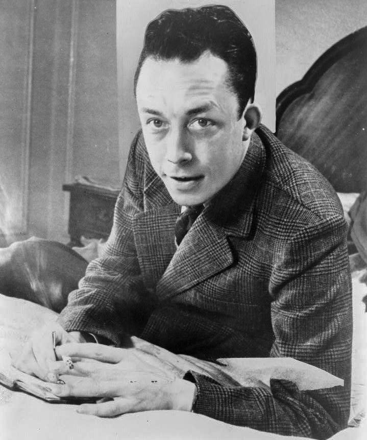
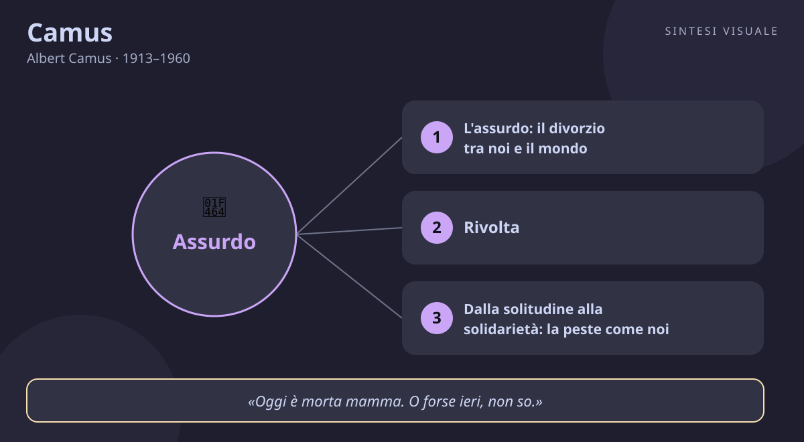

Camus
Albert Camus · 1913–1960
«Bisogna immaginare Sisifo felice»
- Rivolta
- Libertà
- Solidarietà
- Misura
💬La massima
«Bisogna immaginare Sisifo felice.»
— Albert Camus, Il mito di Sisifo, 1942. Frase finale del saggio. In originale francese: «Il faut imaginer Sisyphe heureux.»
Spiegazione. Sisifo è l'uomo condannato dagli dèi al supplizio più assurdo: spingere un masso in cima a una montagna, vederlo rotolare giù e ricominciare da capo, per sempre. Camus lo sceglie come ritratto di ognuno di noi: vite fatte di gesti che si ripetono — sveglie, turni, bollette, code — senza che nessuno ci consegni il senso finale del tutto. Il punto decisivo arriva nella discesa: quando Sisifo scende a riprendersi il masso, è per un momento libero dagli dèi, padrone dei propri passi, e può guardare in faccia la propria fatica senza mentirsi. La felicità di cui parla Camus non è allegria né premio: è la lucidità fiera di chi dice «questa è la mia roccia, questa è la mia salita» e trova proprio lì, non altrove, la propria grandezza. Come il muratore che accarezza il muro appena finito o l'infermiera che sistema il letto anche sapendo che domani sarà da rifare: il senso non sta alla fine della strada, sta nel camminare.
Il punto sottile. Attenzione all'equivoco più comune: Camus non predica la rassegnazione né il sorriso forzato. «Immaginare» è un verbo attivo, quasi una scommessa: Sisifo è felice non perché la pena sia finita, ma perché ha smesso di chiedere al mondo ciò che il mondo non può dargli — una giustificazione ultima — e ha deciso di vivere comunque, da uomo libero. Non è ottimismo («andrà tutto bene») né pessimismo («tanto è inutile»): è rivolta. La rivolta camusiana dice no all'assurdo senza fuggirlo: niente suicidio, che cancella la domanda invece di rispondervi, e niente «salti» verso consolazioni inventate. Tenere gli occhi aperti e continuare: questa è la vittoria di Sisifo sugli dèi, e la nostra sulle giornate che sembrano tutte uguali.
Perché conta oggi. Viviamo l'epoca della stanchezza da ripetizione: notifiche identiche, riunioni identiche, scadenze identiche. La tentazione è doppia e camusiana nel senso peggiore — o intorpidirsi (scrollare, lamentarsi, aspettare il weekend come una liberazione che non libera) o inseguire il colpo di scena che cambi tutto (il lavoro perfetto, la città perfetta, la vita perfetta). Camus taglia in mezzo: la tua giornata non diventerà un poema epico, ma può diventare tua. La domanda da portare a casa non è «che senso ha tutto questo?», che non avrà mai risposta definitiva, ma «come posso abitare con fierezza questo tratto di salita?». Chi la pone, scopre che tra una spinta e l'altra del masso c'è spazio per l'amicizia, il sole, il lavoro ben fatto — e basta, ed è molto.
👤Biografia
Albert Camus nacque il 7 novembre 1913 a Mondovi, nell'Algeria francese, secondo figlio di una famiglia poverissima: il padre, bracciante agricolo, morì l'anno dopo nella Grande Guerra, e Albert crebbe a Belcourt, quartiere popolare di Algeri, con la madre — donna quasi sorda, addetta alle pulizie — la nonna autoritaria e il fratello maggiore. Bambino del sole e del mare, trovò nella scuola — grazie a un maestro, Louis Germain, che lo prese a cuore — e nel calcio la via d'uscita: faceva il portiere nella squadra del quartiere, e dirà più tardi di aver imparato la morale e gli obblighi proprio lì, tra i pali. A diciassette anni la tubercolosi stroncò la carriera sportiva e da allora la malattia lo accompagnerà per tutta la vita, con crisi ricorrenti e lunghe convalescenze.
Gli anni della formazione e della guerra. Laureato in filosofia all'Università di Algeri con una tesi su Plotino e Agostino (1936), fece l'attore e l'animatore teatrale, il giornalista d'inchiesta contro la miseria dei berberi all'Alger républicain, l'impiegato per campare. Iscritto e poi allontanato dal Partito comunista, sognava un teatro popolare per i poveri. Nel 1940 si trasferì nella Parigi occupata dai nazisti; malato, non poté combattere, ma diresse nella clandestinità il giornale della Resistenza Combat. Nel 1942, a soli ventinove anni, pubblicò nello stesso anno Lo straniero e Il mito di Sisifo: la fama fu immediata. Dopo la Liberazione divenne una delle voci morali della Francia, sempre scomoda: denunciò la pena di morte, il franchismo, le bombe atomiche e i campi sovietici con la stessa intransigenza.
Il Nobel e la fine. Nel 1951 L'uomo in rivolta, condanna senza sconti di ogni rivoluzione che uccide in nome del futuro, gli costò la rottura clamorosa con Jean-Paul Sartre e con gran parte della sinistra parigina: Camus rifiutò di scegliere tra due oppressori e restò solo, fedele alla misura mediterranea contro ogni ideologia. Nel 1957, a quarantaquattro anni, ricevette il premio Nobel per la letteratura. Morì il 4 gennaio 1960 in un incidente d'auto presso Villeblevin, mentre tornava a Parigi con l'editore Michel Gallimard: nella sua borsa fu trovato il manoscritto incompiuto del Primo uomo, il romanzo delle origini algerine. È sepolto a Lourmarin, in Provenza: sulla tomba, dicono i visitatori, c'è spesso il sole.
📌Sintesi del pensiero
Il cuore del pensiero di Camus è l'assurdo: lo scontro insanabile tra la fame di senso dell'uomo e il silenzio del mondo, che non risponde. Da questa frattura non si esce né con il suicidio né con consolazioni inventate, ma con tre conseguenze vissute: la rivolta, che dice no senza arrendersi; la libertà, spogliata di ogni illusione di eternità; e la passione, che moltiplica le esperienze invece di sognare l'assoluto. Dalla rivolta solitaria Camus passa poi alla solidarietà: soffrire insieme fonda la fraternità degli uomini, e la misura — il limite mediterraneo contro ogni eccesso — diventa la sua etica contro le ideologie omicide del Novecento.
- Assurdo e conseguenze: il divorzio tra desiderio e mondo; no al suicidio e ai salti consolatori; rivolta, libertà e passione come risposte.
- Solidarietà e misura: dal «io mi rivolto» al «noi siamo»; il limite contro totalitarismi e rivoluzioni che giustificano il delitto.
- Mediterraneo e stile: il sole contro le astrazioni tedesche; scrivere chiaro, vivere presente, restare fedele alla terra.
🏛️I temi fondamentali
- L'assurdo: il divorzio tra noi e il mondo. L'assurdo per Camus non è una parola elegante per dire «tutto è senza senso»: è un rapporto, come l'abbraccio mancato tra due persone. Da una parte l'uomo, che chiede perché — perché la malattia, perché la morte, perché la fatica; dall'altra il mondo, denso e indifferente, che tace. L'assurdo nasce «dal confronto tra il richiamo umano e il silenzio irragionevole del mondo», e si rivela all'improvviso: nel gesto meccanico ripetuto mille volte, nello specchio che un mattino ci mostra un estraneo, nella consapevolezza che un giorno moriremo. Esempio concreto: è quel lunedì in cui, in coda nel traffico come ogni giorno, ti chiedi di colpo «ma perché faccio tutto questo?» — la domanda resta senza risposta ultima, e proprio lì comincia la filosofia di Camus.
- Rivolta, libertà, passione: le tre conseguenze. Scoperto l'assurdo, tre sono le vie d'uscita e due sono inganni: il suicidio fisico, che sopprime il testimone invece di affrontare la domanda, e il «suicidio filosofico», il salto verso una consolazione inventata — Dio imposto per paura, ideologia che promette il paradiso in terra. Resta la terza via: la rivolta, cioè vivere nell'assurdo tenendogli testa, giorno dopo giorno. Dalla rivolta discendono la libertà — libera dal futuro promesso, l'esistenza si gioca tutta nel presente — e la passione: non conta vivere il meglio possibile, dice Camus, ma il più possibile, moltiplicare le esperienze con ardore. Esempio concreto: il collega che smette di aspettare «la svolta» e decide di fare benissimo il proprio lavoro di oggi, prendendosi un aperitivo con gli amici la sera — senza più rimandare la vita a dopo — sta praticando le tre conseguenze senza saperlo.
- Dalla solitudine alla solidarietà: la peste come noi. Con La peste Camus compie il passo decisivo: l'assurdo non è più affare del singolo ma destino comune. La città appestata di Orano è ognuno di noi davanti al male collettivo — epidemie, guerre, ingiustizie — e la risposta non è l'eroismo solitario ma la solidarietà ostinata dei sanitari che lottano «senza illusioni e senza rassegnarsi». «Mi rivolto, dunque siamo»: la rivolta del singolo, quando è autentica, riconosce negli altri la stessa ferita e diventa fraternità. Esempio concreto: durante un'emergenza — un'alluvione nel quartiere, un reparto in affanno — chi si presenta a spalare fango o a dare un turno gratis, senza discorsi e senza aspettarsi medaglie, incarna il dottor Rieux: decenza quotidiana contro la peste, qualunque nome abbia.
- La misura mediterranea contro le ideologie. Ne L'uomo in rivolta Camus denuncia la malattia del secolo: le rivoluzioni che, in nome della Storia o del futuro radioso, giustificano il delitto presente. Contro l'eccesso — uccidere oggi per la felicità di domani — oppone la misura, virtù greca e mediterranea incarnata da Nemesi, la dea del limite: nessuna causa vale il sangue degli innocenti. Per questo ruppe con Sartre e coi comunisti ortodossi, difendendo gli oppressi senza mai assolvere gli oppressori di segno opposto. Esempio concreto: quando in un dibattito acceso — in famiglia o sui social — rifiuti lo slogan «con noi o contro di noi» e pretendi di giudicare ogni violenza con lo stesso metro, da qualunque parte venga, stai esercitando la misura camusiana: il coraggio del limite.
📚Le opere principali
- Lo straniero (1942). Il romanzo dell'assurdo vissuto: Meursault, impiegato di Algeri, seppellisce la madre senza piangere, uccide un uomo sulla spiaggia quasi per caso e affronta il processo e la condanna a morte con indifferenza lucida. Tesi centrale: l'uomo assurdo rifiuta di recitare la commedia sociale — non mente sui propri sentimenti — e paga il prezzo della sincerità. Conta perché è uno dei romanzi più letti del Novecento: con una prosa secca come il sole, mette ognuno davanti alla domanda su quanto, nella vita di tutti i giorni, fingiamo per essere assolti.
- Il mito di Sisifo (1942). Il saggio filosofico gemello del romanzo: si apre con la frase più famosa di Camus — non c'è che un problema filosofico veramente serio, il suicidio, ossia giudicare se la vita valga la pena di essere vissuta — e analizza l'assurdo e le sue conseguenze. Tesi centrale: né suicidio né consolazioni, ma rivolta, libertà e passione. Conta perché è la carta d'identità del pensiero camusiano: chi vuole capire che cosa significhi «vivere senza appello» deve partire da queste pagine.
- La peste (1947). Il romanzo della solidarietà: a Orano, colpita dall'epidemia, il dottor Rieux e i suoi amici organizzano la lotta quotidiana contro il male, sapendo che la peste non si vince mai del tutto. Tesi centrale: davanti al male collettivo la risposta è la decenza ostinata — fare il proprio mestiere bene, insieme. Conta perché trasformò Camus da filosofo dell'assurdo individuale in moralista della fraternità, e perché ogni epidemia — compresa quella del 2020 — l'ha fatto riscoprire come profeta laico della resistenza quotidiana.
- L'uomo in rivolta (1951). Il grande saggio politico: dalla rivolta metafisica a quella storica, Camus mostra come ogni rivoluzione che assolutizza un'idea finisca per giustificare l'omicidio. Tesi centrale: la rivolta autentica pone un limite — il «fin qui e non oltre» — e rifiuta ogni delitto in nome del futuro. Conta perché gli costò la rottura con Sartre e l'isolamento intellettuale, ma fondò l'antitotalitarismo morale del dopoguerra: né con i campi sovietici né con le ingiustizie coloniali, sempre dalla parte delle vittime.
💬Massime celebri
«Non c'è che un problema filosofico veramente serio: il suicidio. Giudicare se la vita valga o non valga la pena di essere vissuta.» — Il mito di Sisifo (1942), frase d'apertura. In francese: «Il n'y a qu'un problème philosophique vraiment sérieux : c'est le suicide.» Conta perché rovescia la filosofia: prima di ogni sistema, bisogna rispondere alla domanda nuda che ognuno si pone nelle notti difficili — e tutto il resto viene dopo.
«Ciò che si impara in mezzo alle pestilenze è che ci sono negli uomini più cose da ammirare che da disprezzare.» — La peste (1947), riflessione del personaggio di Tarrou. Conta perché è il cuore umano del romanzo: contro ogni cinismo, Camus scommette che nelle prove comuni l'uomo mostra più grandezza che bassezza — un antidoto da mandare a memoria nei tempi cupi.
«Oggi è morta mamma. O forse ieri, non so.» — Lo straniero (1942), frase d'apertura del romanzo. In francese: «Aujourd'hui, maman est morte. Ou peut-être hier, je ne sais pas.» Conta perché in due righe straniate presenta Meursault e tutto l'assurdo: un uomo che non recita il dolore comandato, e per questo verrà giudicato più per l'indifferenza che per il delitto.
⌛Contesto storico
- Camus nacque nel 1913 in un'Algeria che era colonia francese a tutti gli effetti: un milione di coloni europei comandava su nove milioni di algerini musulmani, poveri e senza diritti. La società della sua infanzia era divisa tra i quartieri europei di Algeri e la miseria della casbah: lui, piede nero povero, stava dalla parte dei dominatori per nascita e dalla parte dei dominati per miseria. Aveva un anno quando scoppiò la Prima guerra mondiale, che gli portò via il padre; vent'anni quando Hitler salì al potere in Germania; ventisei quando cominciò la Seconda guerra mondiale.
- La sua giovinezza coincise con gli anni Trenta europei: la crisi economica, l'ascesa dei fascismi, la guerra di Spagna, il Fronte popolare in Francia. A Parigi visse l'occupazione nazista e la Resistenza, scrivendo editoriali clandestini su Combat; alla Liberazione, la Francia si scoprì divisa tra epurazioni, miseria e speranza. Intanto il mondo entrava nella guerra fredda: due blocchi armati di bombe atomiche, due ideologie che chiedevano a ogni intellettuale di arruolarsi. Camus rifiutò l'arruolamento: denunciò i campi sovietici quando la sinistra li taceva e le repressioni coloniali francesi quando la destra le negava.
- Intorno a lui Parigi era la capitale mondiale delle idee: Saint-Germain-des-Prés, i caffè dove Sartre e Simone de Beauvoir scrivevano l'esistenzialismo, il teatro dell'assurdo che nasceva con Beckett e Ionesco, il cinema e il jazz americani che sbarcavano in Europa. La società francese passava dalla ricostruzione al boom economico, mentre l'impero coloniale crollava: l'Indocina perduta nel 1954, poi la guerra d'Algeria (1954-1962), che lacerò Camus — solidale con gli arabi oppressi ma legato alla terra natale e contrario al terrorismo come alla repressione. Morì nel 1960, senza vedere né la fine di quella guerra né l'indipendenza algerina del 1962.
- Da chi è stato influenzato nella tesi di laurea studiò Plotino e Agostino, i pensatori del desiderio e dell'interiorità; amò Dostoevskij, il romanziere delle domande ultime; Kafka, il poeta dell'assurdo burocratico; Melville e la letteratura americana dell'avventura; Nietzsche, maestro del sospetto verso le consolazioni; e il pensiero greco — i presocratici, la tragedia, la Nemesi del limite — contro le astrazioni dei sistemi.
- A chi ha trasmesso al teatro dell'assurdo di Beckett e Ionesco, che misero in scena il suo Sisifo; all'esistenzialismo e alla filosofia del dopoguerra, anche per contrasto — la rottura con Sartre definì un'epoca; alla sinistra antitotalitaria e ai dissidenti di ogni regime; al pensiero postcoloniale, che con lui fa i conti da decenni; e ai lettori di ogni generazione, che in ogni crisi — guerre, pandemie, smarrimenti — ritrovano nella Peste e nel Mito di Sisifo un manuale di dignità.
🌊L'eredità
- Il primo erede di Camus fu il suo grande avversario: Jean-Paul Sartre. La rottura del 1952 — dopo la stroncatura de L'uomo in rivolta sulla rivista Les Temps modernes — divise in due la cultura francese: di qua l'impegno che giustifica ogni mezzo per la rivoluzione, di là la morale del limite. Sartre vinse la battaglia parigina di allora, ma Camus vinse la guerra del tempo: crollati i muri del 1989, è la sua diffidenza verso le ideologie omicide a sembrare profetica, ed è lui l'autore che i giovani continuano a leggere. Accanto a Sartre, il teatro dell'assurdo — Beckett che fa aspettare Godot, Ionesco con i suoi rinoceronti — mise letteralmente in scena il mondo del Mito di Sisifo.
- Nel secondo Novecento Camus è diventato un classico trasversale: i dissidenti dell'Est lo citarono contro i regimi, gli intellettuali algerini e francofoni — da Kateb Yacine ad Assia Djebar — fecero i conti con la sua Algeria ambigua, e perfino Edward Said, che lo criticò per il silenzio sui colonizzati, ne riconobbe la grandezza stilistica e morale. Durante la pandemia del 2020 La peste tornò in testa alle classifiche in mezzo mondo: segno che, quando la storia si fa dura, gli uomini cercano proprio quel manuale di decenza quotidiana. Oggi Camus vive ovunque si rifiuti il ricatto «o con noi o contro di noi»: nei giornalisti che denunciano ogni potere, negli insegnanti che difendono la misura, in chiunque spinga il proprio masso senza smettere di guardarsi intorno.
🌍Esempi di oggi
- La cassiera del turno di notte. Scansiona prodotti da otto ore, con la schiena a pezzi e clienti che non la guardano in faccia. Un giorno decide di cambiare il finale della scena: saluta per prima, mette cura nel gesto, si prende sul serio come professionista dell'accoglienza. Il masso — il nastro che riparte sempre — è identico; lei, nella discesa a riprenderlo, ha scelto di esserne padrona e non vittima.
- Il caregiver che rifà il letto ogni mattina. Assiste il padre malato: ogni giorno le stesse medicine, le stesse faccende, la stessa stanchezza. Gli amici gli dicono «che vita sprecata», lui risponde che in quel rifare c'è tutto il suo amore, e che non aspetta un premio ma vive un legame. È Sisifo che sorride nella discesa: il senso non è dopo la salita, è dentro ogni passo condiviso.
- Lo studente fuori sede tra lavoro e libri. Fa il rider di giorno e studia di notte, gli esami vanno male, i compagni sembrano correre più veloci. Invece di mollare o di sognare scorciatoie, accetta la salita — un esame alla volta, una consegna alla volta — e scopre che la fatica affrontata a occhi aperti lo rende più solido dei fortunati. La lotta verso la cima, dice Camus, basta a riempire il cuore di un uomo: il suo cuore, sera dopo sera, si riempie davvero.
📄Albert Camus (1913–1960), il portiere di Algeri che insegnò a essere felici senza illusioni
Ritratto (Albert Camus nel 1957, fotografia della Library of Congress, New York World-Telegram — pubblico dominio, Wikimedia Commons):
🧠Quiz
Rispondi in chat con la lettera di ogni risposta, es. 1B 2C 3A 4D 5C. Oppure copia e rispondi così: «Quiz Camus: 1B 2C 3A 4D 5C» (usa - per le risposte che salti).
1 Cosa significa «bisogna immaginare Sisifo felice»?
2 Cos'è l'assurdo per Camus?
3 Quali sono le tre conseguenze che Camus trae dall'assurdo?
4 Cosa insegna La peste secondo il briefing?
5 Quale episodio segna davvero la vita di Camus?
✅Soluzioni — tocca per vedere
1C – 2B – 3C – 4C – 5C
🔁Ripasso
- Sisifo felice e assurdo: se sbagli la 1 o la 2, ricorda la discesa dalla montagna — il momento in cui Sisifo, libero dagli dèi, guarda in faccia la fatica e la fa propria; e fissa la formula del divorzio: fame umana di senso contro silenzio del mondo.
- Le tre conseguenze: se sbagli la 3, ripeti come una filastrocca rivolta-libertà-passione: no al suicidio e alle consolazioni inventate, sì al presente vissuto a occhi aperti e al «più possibile» invece del «meglio possibile».
- Peste e vita: se sbagli la 4 o la 5, pensa al dottor Rieux che lotta senza illusioni insieme agli altri, e alle date-chiave: 1913 Algeri, 1942 Lo straniero e Il mito di Sisifo, 1947 La peste, 1957 il Nobel, 1960 l'incidente.
🖼️In un colpo d’occhio

Tocca l’immagine per ingrandirla.